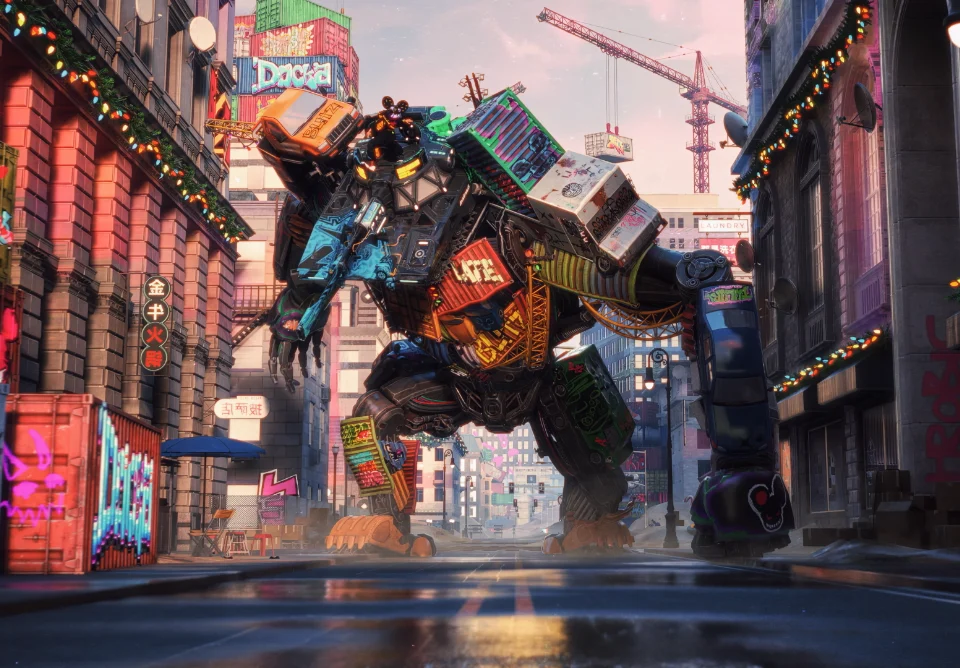
以数字技术激活文旅资源，打通线上云端游戏与线下沉浸场景
让文化“活”起来，让旅行“潮”起来
当文化遗产遇上数字技术，当旅行体验融入智能创新
我们以“科技+文旅”为内核，打通线上线下场景，打造集沉浸式体验、数字化传播、创意化拍摄于一体的文旅全链条服务
让文旅资源“活起来”，让旅行体验“潮起来”
重塑感知 · 定义未来
多物理场耦合算法 / 高精度三维重建 / 毫米级复刻
数字仿真引擎 / 事前预警
以毫秒级接收最新数据，并立即触发业务逻辑的运作模式
多模态感知(视觉、听觉、触觉) 与空间计算
数字化形式生产、存储并通过网络传播与交互的信息载体，是数字空间中最基础的构成单元
还原南浔古镇的自然景观和街区，用户能够在这个数字世界中探索古镇文化与建筑。打破传统电商经营模式，采用线上元宇宙加线下实体结合，运用AR/VR/AI数字孪生等技术为用户打造一个24小时在线的元宇宙商城。用户在商城中通过自己的虚拟化身在各种虚拟店铺中自由漫游，体验从试穿虚拟服饰到购买数字商品的全过程。
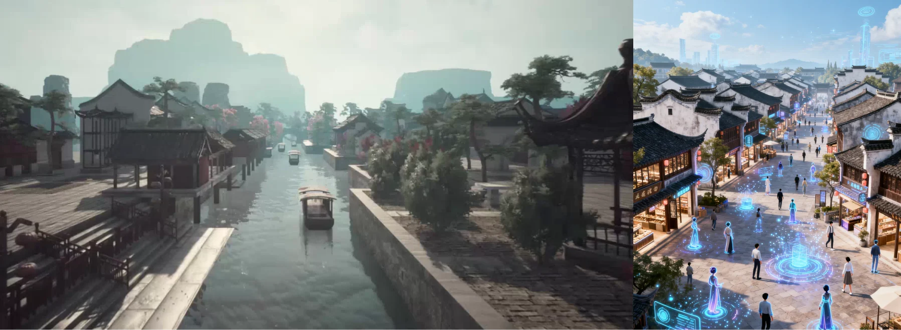
通过二维码引导，用户能够透明数字人和客进入元宇宙世界。与好友互动，体验品牌故事并参与各类有趣的活动。打破传统电商与品牌传播模式，提升与消费者的互动与粘性。构建一个以虚拟社交、娱乐与经济互动为核心的数字世界，让用户能够在沉浸式环境中探索、互动与交易。
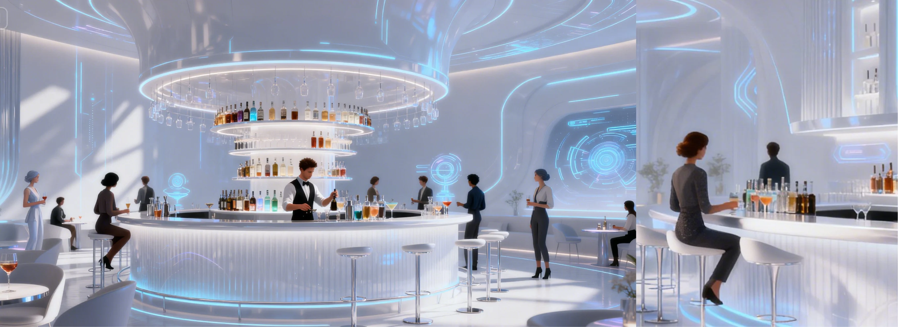
一场创新的虚拟音乐盛宴，它结合虚拟现实(VR)和区块链技术，让用户能以虚拟化身沉浸于音乐盛宴。通过iBox平台，观众在虚拟世界触享音乐表演，与粉丝互动，收藏演唱会相关NFT。元宇宙线上演唱会突破传统，以沉浸式体验带来全新参与感和互动性。
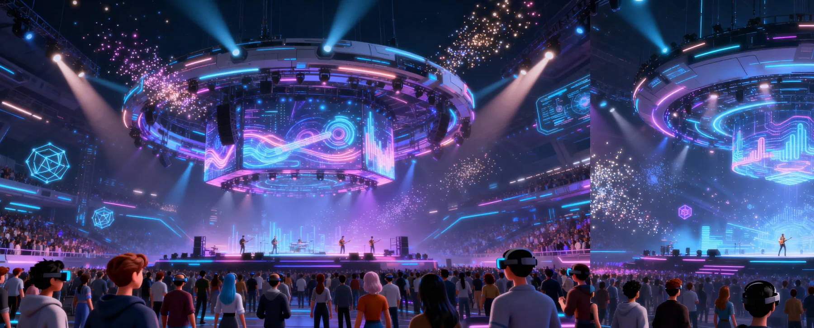
乘势依托丰富恐龙文化资源，打造“ 极客建村”数字文旅新城，项目结合数字技术与元宇宙，构建沉浸式白垩纪体验，以推动当地旅游创新与经济振兴。
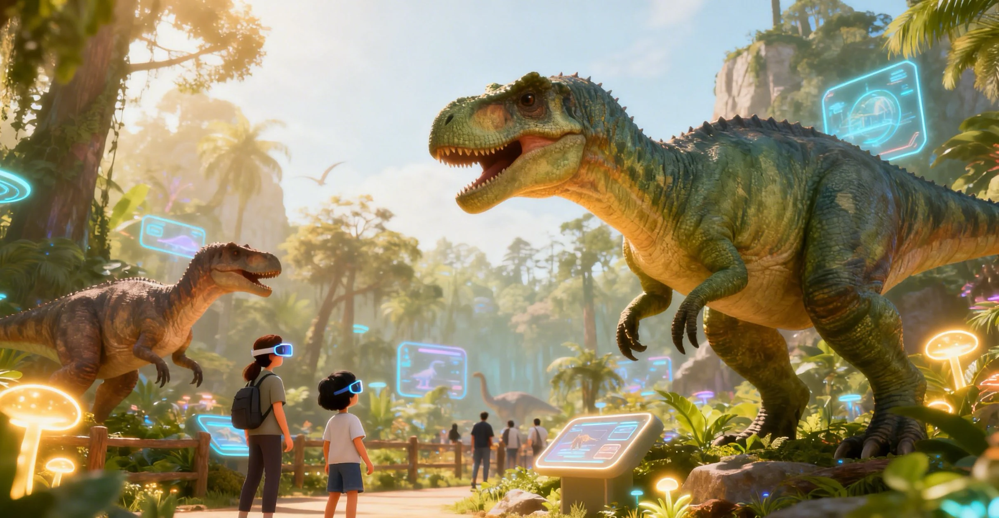
艺术品通过720度虚拟空间立体展示，大众互动点评，衍生商城提供丰富的艺术衍生品交易。社交和交易功能强大，可自建虚拟形象。展示社交信息并实时互动。娱乐体验丰富，寻宝、共创等模式兼具趣味与价值，为艺术爱好者打造独特的艺术之旅。
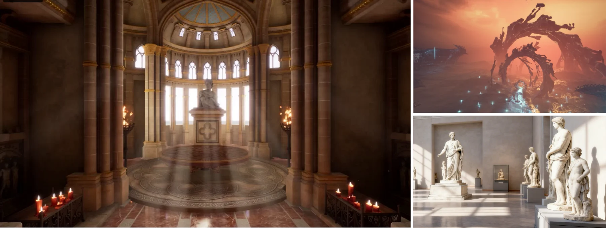
融入物理空间、依托终端设备呈现、支持现场实时交互的数字信息载体
“VR剑门关”是2024年由四川广元市文化旅游部门推出的全新旅游体验项目干年战役。以智能微观为核心，聚焦虚拟增强现实、虚拟仿真、全息显示3大产业方向，全力发展教育内容、5G网络通信、计算机信息技术、智能终端、数字展示等8大产业细分，利用VR技术，将听不见的文辞古语、秀丽山河、文化遗产带到世界的每一个角落，让体验者跨越时间和空间，与现实情境感受并了解历史文化及发展风光。
由黄山市黄山区政府主导的一个数字文旅项目。结合黄山区当地文化、资源等元素，以第一视角的形式带入到游戏场景中，让游客感受到数字科技与历史文化相结合的文化内涵，通过AR技术结合线下实体场景，对历史文化进行科普性教育，游客不仅能在游戏的同时学习更多有关黄山的历史文化知识。
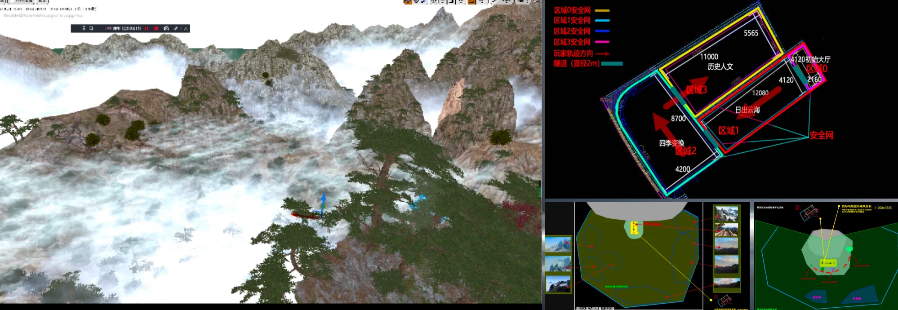
作为具有重大意义的航天科普基地，其涵盖了多个展区，包含呈现近半个世纪中国航天的壮丽发展历程的百年航天，利用先进技术模拟宇宙奇妙探索的星空空间以及全面展示国家在航天领域的卓越成就的航天成就等8个板块。通过数字化的手段，为公众打造了一个集科普、体验、互动为一体的高品质航天科技馆，推动航天文化的广泛传播与持续发展。
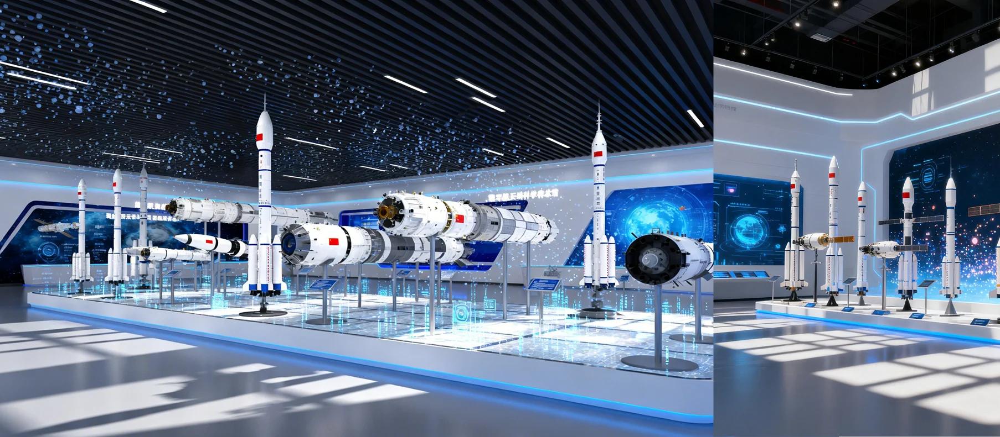
全国首个微地形数字生态探索体验中心，致力于打造中国首个元宇宙沉浸文旅商业新圣地，全力建设成为全球具有影响力的国际文旅元宇宙产业创新基地。在这里用户可以突破时空限制，在主题区与数字化身，一键抵达浩瀚缥缈的星辰，无论是漫天飞雪的极地、仙女山的微观风光，还是戈壁滩的辉煌，都能沉浸式微游。同时便捷的社交分享功能，让用户随时交流所思所想，共同结现武隆的神奇魅力。
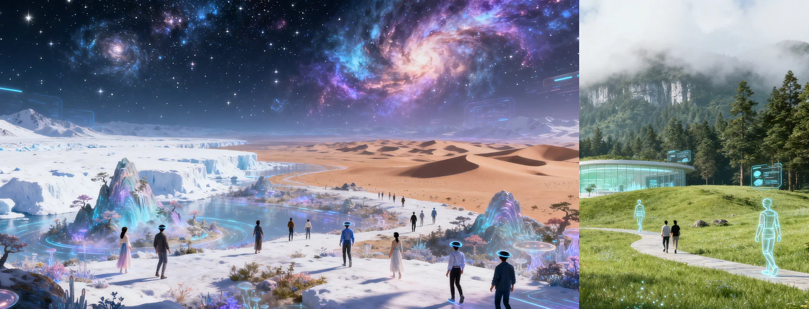
生物礁沉浸空间通过营造一个栩栩如生的海底世界，带领观众进入一个充满生物的海洋生态环境。空间内的海洋景观包括五彩斑斓的珊瑚礁、悠游的海龟、游动的鱼群等多种海洋生物，展现出海底世界的动荡与活力。这个沉浸式的展示不仅让观众感受到大自然的神奇和美丽，还通过虚拟展示的方式提供了关于海洋生物和生态环境的科普信息，增强了观众对海洋保护与可持续发展的认识。
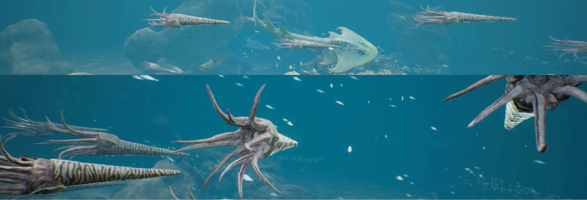
国内首屈一指的大空间多人互动VR主题公园，结合景区文化，设有“鹿回头传奇”星航战队”VR影院”等多款VR互动娱乐产品，集沉浸感、交互性和刺激性于一体的大型VR游乐，给大众带来令同行业最先进的虚拟现实技术和最新颖的沉浸式体验。公园内还提供了满足玩家需要虚拟现实体验所必要的设施和空间。
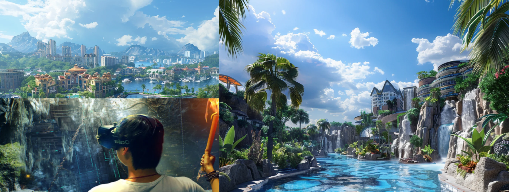
侏罗纪海底大空间项目以沉浸式数字内容为核心，打造一个引人入胜的虚拟海底世界，让游客穿越回现代海底到远古侏罗纪时期的壮丽景观。通过先进的VR技术和大空间技术，游客将置身于逼真的海洋生态系统中，探索远古海洋的奇异生物、神秘海底洞穴、以及丰富多样的海洋生物群落。
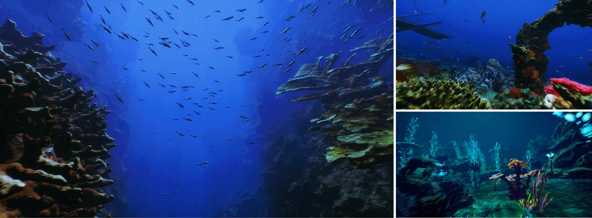
智能AR导览系统，通过定位融合技术，为建筑和场景的实体交互信息与商业推荐，并提供动态路线规划。结合互动式教育艺术与数字广告，实现场景化营销，有效提升品牌吸引力与顾客沉浸式体验。
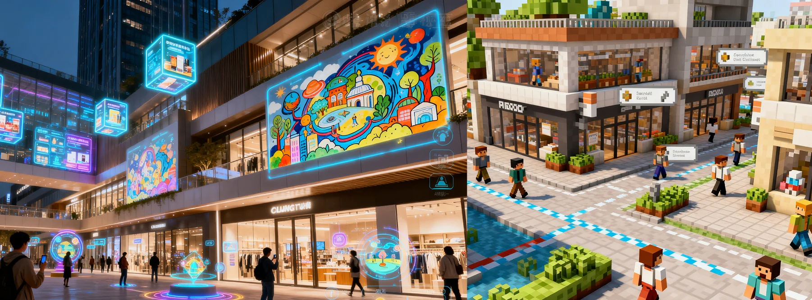
3D虚拟导游员，提供拟人化互动解答与问路。结合高精度动态路径指引与文物识别技术，可实现藏品细节的深度解析与个性化参观路线规划，打造智能化、沉浸式的文化导览新体验。
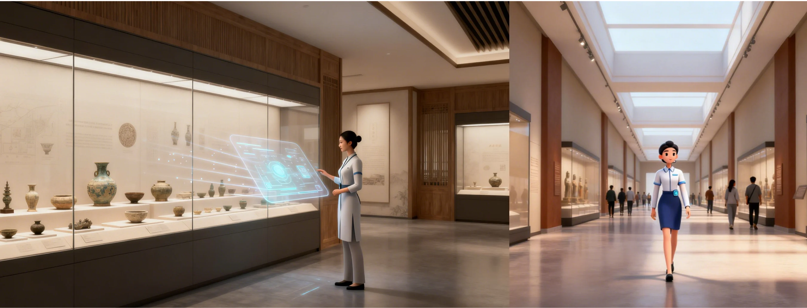
将视觉影像转化为电子信号或数字资产的过程，是影像内容生产的基础采集环节
哪吒U/S/V三大车型线上发布会，三维技术构建的虚拟发布会舞台与真人影像进行合成。随着发布会流程切换不同主题特效，把真实拍摄的车辆影像数据映射到舞台之中，从多个维度展示产品内外细节。
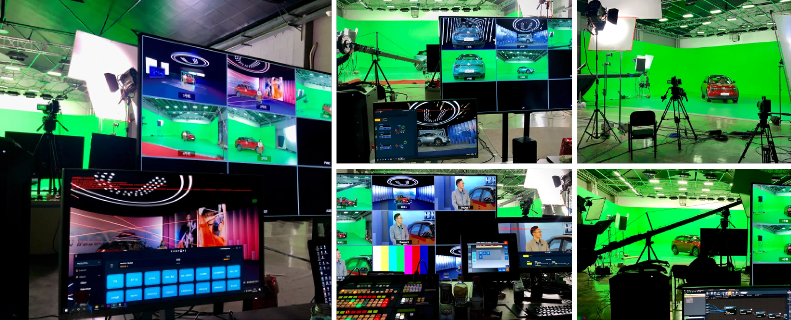
360°VR全景机动战姬重装上线展示，依托先进的VR技术，为玩家打造逼真的星际世界。在无人幸存的沦陷区和居高临下的军事基地中，玩家以指挥官身份，借助高度还原的场景与光影效果，指挥战姬参与微操爽快战斗。通过精准的坐标点触和顺畅的交互设计，提升玩家的体验感，带来策略与社交互动的双重体验。
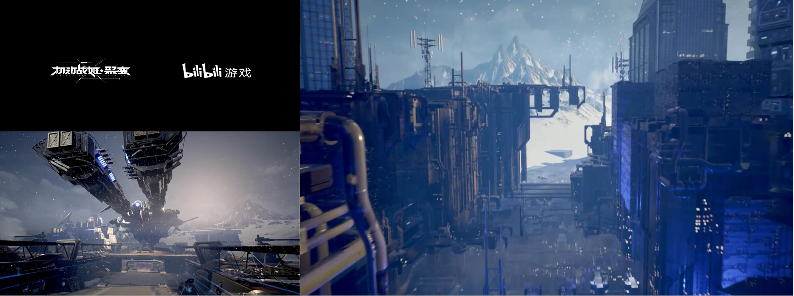
现场AR特效展示车辆风阻效果，汽车在动态场景中表现其空气动力学性能和稳定表现，展现其技术实力。为现场观众呈现直观震撼视觉体验，增加发布会的科技感。
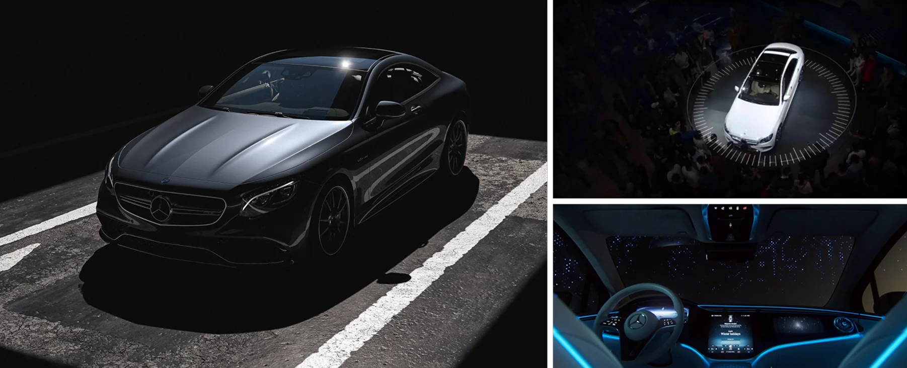
易烊千玺18岁成人礼演唱会上，通过实时动捕及面部捕捉技术，辅以高度逼真的渲染与实时交互，易烊千玺与数字人“红豆”完美配合。不仅展示了数字技术的无限可能，也为粉丝带来了一场跨越虚拟与现实的视听盛宴。
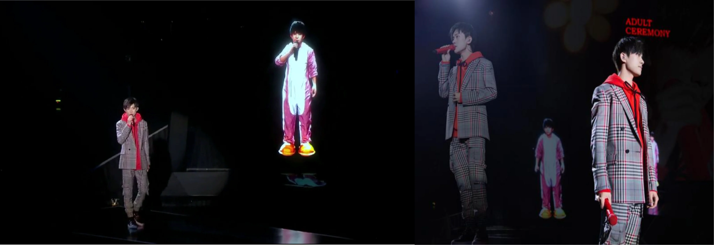